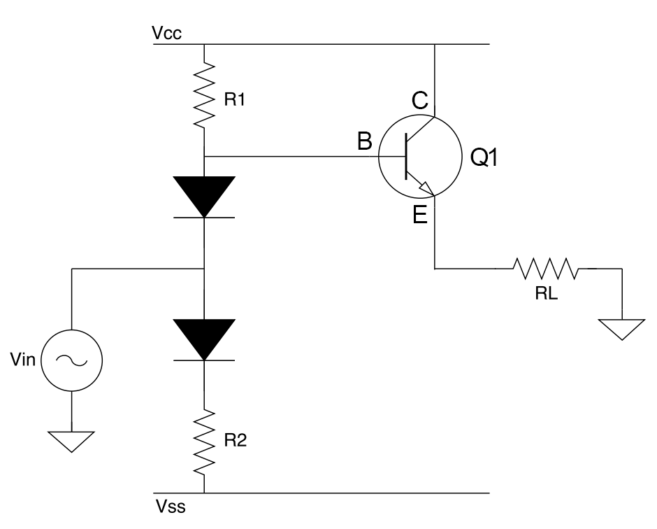
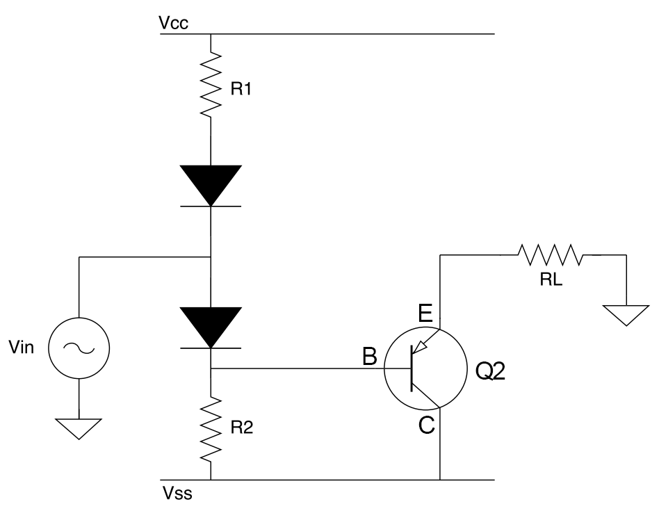
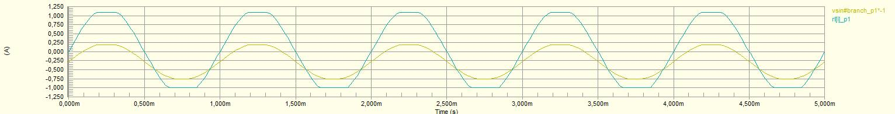
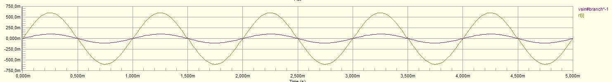
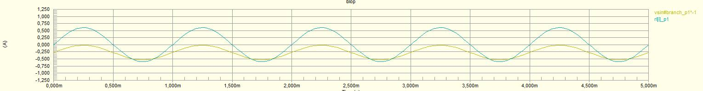
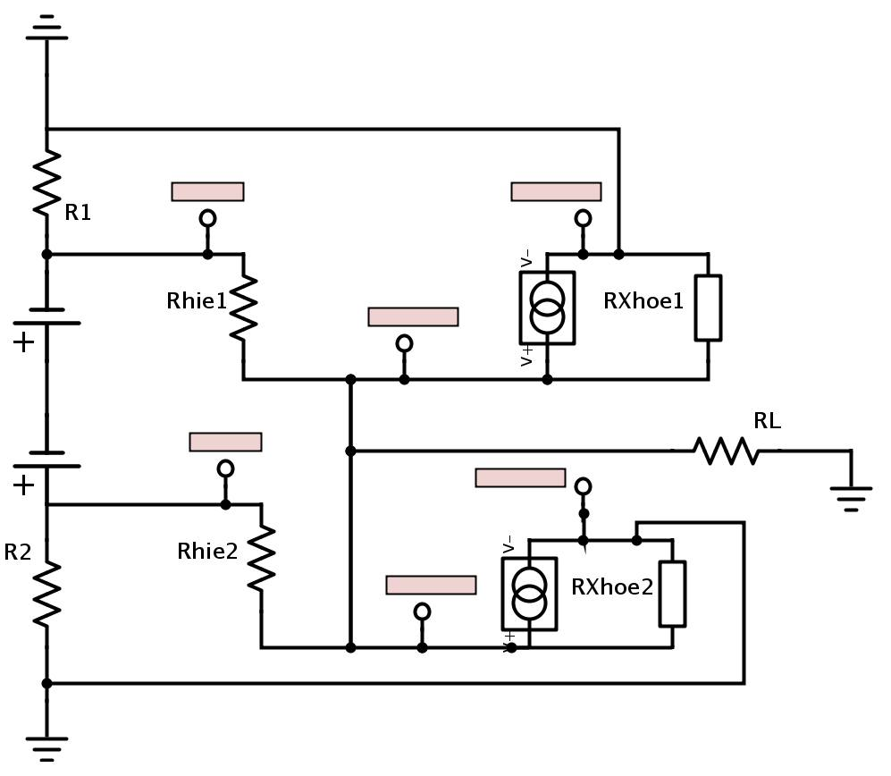

Amplificateur de classe AB à transistors bipolaires
Nous allons étudier le comportement d'un amplificateur de classe AB transistors bipolaires autour d'un point de fonctionnement. Pour ce faire, nous travaillerons avec les éléments suivants :
- Une source de tension sinusoidale \(V_{in}\) de fréquence 1 kHz,
- Une alimentation en tension continue \(V_{cc}\) et \(V_{ss}\) allant de +10 et -10V,
- Deux diodes semblables l'une à l'autre,
- Deux résistances \(R_1\) et \(R_2\) de valeur 25 puis 100 ohm,
- Une résistance \(R_L\) de charge de 8 puis 16 ohm.
Fonctionnement du montage
Principe
On peut expliquer le fonctionnement de cet amplificateur brièvement comme suit :La source \(V_{in{\) envoie une tension sinusoïdale entre les deux diodes. Cette tension, tantôt positive, tantôt negative, va polariser en actif puis en saturé respectivement les transistors NPN et PNP.
Alternance positive
Le transistor PNP du bas est bloqué. Nous obtenons le circuit suivant :|  | \(f = 1kHz \\ V_{in} = Asin (2 \pi f t) \\ V_{cc} = +10V \\ V_{ss} = -10V \\ R_1 = 100 \Omega \\ R_2 = 100 \Omega \\ R_L = 8 \Omega \) |
Si la tension d'entrée est nulle ou moyenne
Exemple avec une tension d'entrée de 3V :La tension au dessus la diode supérieure, passante, est 3.7V. La tension sur R1 est donc 6.3V, ce qui rend la jonction BC bloquée avec 6.3V à ses bornes.
On peut exprimer le bilan de tension :
\(V_{cc} = V_{CB} + V_{BE} + V_{R_L} \\ 10V = 6.3V + 0.7V + V_{R_L} \\ V_{R_L} = 3V\)
Le courant dans la résistance de charge peut être calculé par une simple loi d'Ohm, on obtient :
\(I_{R_L} = 3V / 8\Omega = 375mA\)
C'est un montage suiveur de tension et amplificateur de courant.
Remarque : nous avons obtenu 359,7mA lors des simulations.
Si la tension d'entrée est grande
Exemple avec une tension d'entrée de 10V :La diode supérieure est bloquée. On peut directement exprimer la relation suivante :
\(V_{cc} = V_{R1} + V_{BE} + V_{R_L} \\ 10V = I_B*100\Omega + 0.7V + I_E*8\Omega \)
Or, on connait la relation liant les courants du transistor :
\(I_C = h_{FE}*I_B \\ I_E = I_B + I_C = (h_{FE}+1)I_B\)
On peut donc réécrire :
\(10V = I_B*100\Omega + 0.7V + (100+1)*I_B*8\Omega \\ I_B(100 \Omega + 101*8\Omega) = 9.3V \\ I_B = \frac{9.3V}{908\Omega} = 10.2mA \)
Du coup, on obtient le courant et la tension dans la charge :
\(I_E = 101*I_B = 1.0302A \\ V_{R_L} = I_E*R_L = 1.0302A*8\Omega = 8.246V.\)
Remarque : nous avons obtenu 1.0967A lors des simulations. Nous pouvons regarder en détail l'équation utilisée :
é \(10V = I_B*100\Omega + V_{BE} + (h_{FE}+1)*I_B*8\Omega \). Ici interviennent en fait deux paramètres du transistor : \(h_{FE}\) et \(V_{CE}\).
1. \(h_{FE}\)
On trouve comme valeurs dans la simulation : \(I_{R_L} = 1.10A, I_{Q1B} = 10.9mA\)
Donc,
\(h_{FE} = \frac{I_{R_L}}{I_B} - 1 = 99.9174 \approx 100\)
Le problè ne vient pas du gain du transistor.
2. \(V_{BE}\)
On trouve comme valeurs : \(V_{BQ1} = 9.73V, V_{out} = 8.77V\) donc \(V_{CE} = 0.96V\)
C'est le paramètre \(V_{CE}\) qui a été erroné : pour un tel courant de base, on prévoit en pratique des transistors plus larges, de sorte à garder un \(V_{CE}\) correct.
On peut alors recalculer nos courants avec cette valeur :
On a donc une sorte de suiveur en tension (avec pertes au niveau du transistor) et un amplificateur de courant.
Alternance négative
Le transistor NPN du haut est bloqué. Nous obtenons le schéma suivant :|  | \(f = 1kHz \\ V_{in} = Asin (2 \pi f t) \\ V_{cc} = +10V \\ V_{ss} = -10V \\ R_1 = 100 \Omega \\ R_2 = 100 \Omega \\ R_L = 8 \Omega \) |
Le principe de fonctionnement est similaire à celui vu plus haut.

Gain du montage
Nous considérerons le gain en tension et le gain en courant du montage. Ces valeurs sont données par les équations suivantes :
\(A_{IF} = \frac{I_{out}}{I_{in}} = \frac{I_E}{I_{in}} \\
A_{VF} = \frac{V_{out}}{V_{in}} = \frac{I_E*R_L}{V_{in}}\)
Gain en courant
Dans un premier temps, nous balayons avec un sinus de 10V en entrée pour observer l'allure des courbes de courants et donc le gain :
\(V_{in} = 10sin(2\pi f t)V, R_1 = 25 \Omega, R_L = 8 \Omega\)

On peut noter que nous arrivons vite à saturation : le gain n'est donc pas constant et ne vaut pas la peine d'etre étudié.
Remarque : lors des essais, nous voyons que la saturation arrive plus tard si l'on utilise la charge de 16 \(\Omega\). Ceci s'explique de la manière suivante :
\(V_{cc} = I_ER_L + V_{CE} + V_{R1} \\ 10V = 101*I_B*R_L + 0.7V + (V_{cc} - V_{in} - 0.7V) \\ 5V = 101I_B*R_L\)
Donc si la charge augmente, le courant de base diminue : on arrive moins vite en saturation.
Nous alons alors nous intéresser a des tensions d'entrée plus faibles, en prenant un sinus d'amplitude de 5V.
La courbe renvoyée est la suivante :
\(V_{in} = 5sin(2\pi f t)V, R_1 = 100 \Omega, R_L = 8 \Omega\)

Le gain en courant est donc de l'ordre de 5.69.
Nous avons aussi testé avec \(R1 = 25\Omega\) et \(R_L = 8 \Omega\) :

Remarque : l'offset sur le courant d'entrée s'explique simplement par la présence du circuit de polarisation des transistors.
Le gain trouve approche à 2 : un gain faible pour un amplificateur.
Gain en tension
Le gain en tension est unitaire ou moindre quand la tension d'entrée devient grande (voir paragraphe sur le fonctionnement du montage).Impédances d'entrée et de sortie
Pour connaitre les impédances d'entrée et de sortie du montage, il faut diviser la tension variationnelle à ses bornes par le courant variationnel. On obtient les equations suivantes :
\(Z_{out} = \frac{\Delta V_{out}}{\Delta I_{out}} \\
Z_{in} = \frac{\Delta V_{n}}{\Delta I_{in}}\)
Une autre maniere de calculer ceci est de passer a l'equivalent en petits signaux de l'amplificateur :

Bilan des puissances
Nous utilisons une entrée sinusoidale. Il est donc nécessaire d'intégrer sur une période puis de diviser par cette période la valeur de la puissance pour obtenir la moyenne :
\(P_{utile} = V_{R_L}*I_{R_L} \\
P_{totale} = 2*P_{} \)
Remarque : certains courants (e.g. les courants de collecteurs) sont des demi-sinus rectifiés ( car polarisation changeant pour chaque alternance du signal d'entrée):

La valeur efficace d'un courant de ce type est donnée par :
\(I = \frac{I_{max}}{2}\)
Nous prenons comme valeurs pour calculer la puissance : \(V_{in} = 5sin(2\pi f t)V, R_1 = 100 \Omega, R_L = 8 \Omega\)
Le reste du circuit reste inchangé depuis le début.
Remarques et approximations
Crossover
Les deux diodes présentes sur le montage fournissent une petite différence de potentiel continue à la paire de transistors de sortie. Ceci permet de les polariser en actif en permanence pour que la distortion de crossover soit minimisée.
Emballement thermique
Dans ce montage, si un transistor chauffe, sa tension \(V_{BE}\) diminue. Si la somme \(V_{BE1} + V_{BE2}\) reste à peu près constante, le courant traversant les 2 transistors augmente. Ce courant plus important tend à augmenter \(V_{BE}\) mais donne aussi et surtout lieu à une dissipation de puissance plus importante, ce qui fait chauffer les transistors. On a un phénomène d’emballement thermique susceptible de détruire les transistors.Pour remédier à ce problème, on ajoute des résistances de limitation de courant entre la paire de transistors complémentaires.